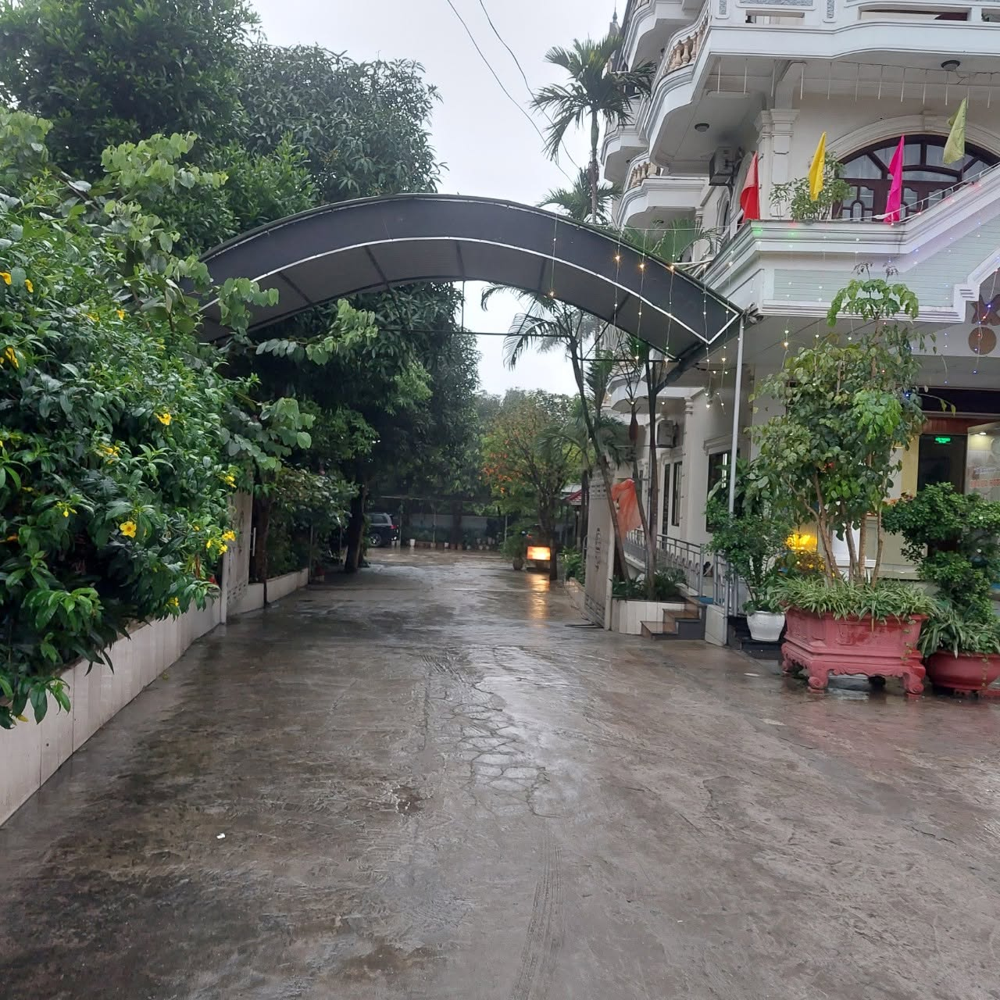

Là một trong những quảng trường lớn và đẹp nhất khu vực Bắc Trung Bộ, Quảng trường Hồ Chí Minh tọa lạc ngay trung tâm thành phố Vinh, Nghệ An — chỉ cách Khách Sạn Hoa Đô khoảng 5km. Đây là điểm đến không thể bỏ lỡ khi ghé thăm vùng đất xứ Nghệ, vừa mang giá trị lịch sử vừa là không gian sinh hoạt cộng đồng sôi động.
Không gian tưởng niệm Chủ tịch Hồ Chí Minh
Trung tâm quảng trường là tượng đài Bác Hồ uy nghi, sừng sững giữa không gian rộng lớn, phía sau là núi Chung xanh mát — ngọn núi gắn liền với tuổi thơ của Chủ tịch Hồ Chí Minh tại quê hương Nghệ An. Đây là nơi thường xuyên diễn ra các hoạt động chính trị, văn hóa quan trọng của tỉnh, cũng là điểm đến để người dân và du khách bày tỏ lòng thành kính, tưởng nhớ vị lãnh tụ kính yêu của dân tộc.
Không gian sinh hoạt cộng đồng sôi động
Không chỉ mang ý nghĩa lịch sử, quảng trường còn là "lá phổi xanh" giữa lòng thành phố Vinh với hệ thống cây xanh, đài phun nước, lối đi bộ rộng rãi. Vào mỗi buổi chiều tối, nơi đây trở nên nhộn nhịp với người dân đến tập thể dục, vui chơi, các bạn trẻ tụ họp trò chuyện, chụp ảnh — tạo nên bức tranh sinh hoạt đời thường sống động, gần gũi.
Điểm check-in về đêm ấn tượng
Khi màn đêm buông xuống, hệ thống đèn chiếu sáng nghệ thuật khiến khu vực quảng trường và tượng đài trở nên lung linh, huyền ảo. Đây là thời điểm lý tưởng để dạo bộ, thư giãn và lưu lại những bức ảnh đẹp giữa không gian rộng lớn, thoáng đãng bậc nhất thành phố Vinh.

Kinh nghiệm tham quan
- 🌆 Buổi chiều tối là thời điểm đẹp và nhộn nhịp nhất để ghé thăm.
- 🚶 Không gian rộng, phù hợp đi dạo, tập thể dục hoặc vui chơi cùng gia đình.
- 📸 Tượng đài Bác Hồ và núi Chung là background chụp ảnh rất đẹp.
- 🍜 Xung quanh khu vực có nhiều quán ăn, cà phê phục vụ đến khuya.
Nghỉ ngơi thuận tiện tại Khách Sạn Hoa Đô
Khách Sạn Hoa Đô cách trung tâm TP. Vinh chỉ khoảng 5km, rất thuận tiện để quý khách vừa nghỉ ngơi thoải mái, vừa dễ dàng di chuyển tham quan Quảng trường Hồ Chí Minh và các điểm đến khác trong thành phố.
Liên Hệ Đặt Phòng Ngay